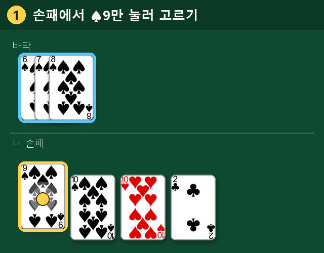
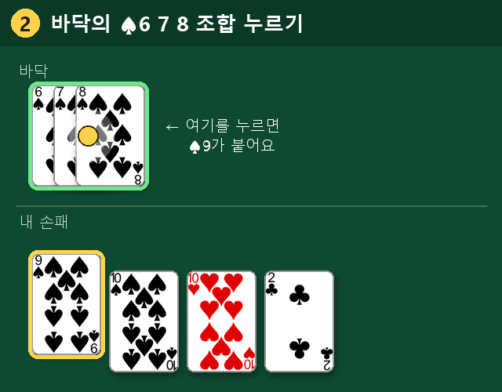
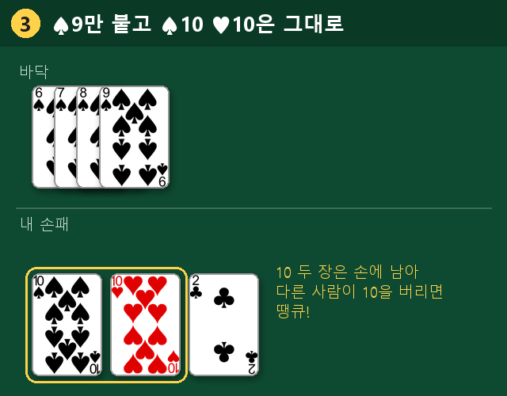
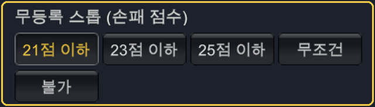

1. 시작하기
앱을 열면 맨 위에 이름 칸이 있습니다. 처음엔 기본 이름이 들어 있으니 그대로 쓰거나, 칸을 눌러 바꾸거나, ✕로 지우고 새로 넣으세요. 한 번 넣은 이름은 다음에도 그대로 나옵니다. 이름이 비어 있으면 아래 버튼이 눌리지 않습니다.
| 혼자 하기 | 뻐꾸기·독수리·부엉이·갈매기 봇과 바로 한 판. 인원(기본 4명)만 고르고 입장. |
|---|---|
| 방 만들기 | 내가 방장이 되어 친구를 부릅니다. 인원·방 이름·방 키를 정하고 방 열고 입장. 와이파이·인터넷 연결 상태도 여기서 보입니다. |
| 참가하기 | 친구가 만든 방에 들어갑니다. QR 찍기, 붙여넣기, 참가 코드, 같은 와이파이의 방 목록 중 편한 것으로 고르고 방 키를 넣어 입장. |
위 줄의 ← 처음으로는 첫 화면으로, 종료는 앱 끝내기, 설정은 규칙·봇 속도·레버리지·소리를 바꾸는 화면입니다. 입력 칸을 누르면 글자 전체가 선택되어 바로 고쳐 칠 수 있습니다.
2. 초대하고 참가하기
방장
방을 만들면 대기실에 참가 코드(예: P8LHHM), 방 키, QR, 방 표시 글자(예: BW)가 나옵니다.
- 옆에 있는 친구 — QR을 보여 주세요. 찍으면 방 키 없이 바로 들어옵니다.
- 멀리 있는 친구 — 카톡 초대를 누르면 카톡으로 링크가 갑니다. 받은 친구는 링크만 누르면 들어옵니다.
- 같은 와이파이 친구 — 친구의 '참가하기' 화면 방 목록에 내 방이 뜹니다. 방 키를 알려 주세요.
사람이 모자라면 빈자리 봇으로 채우고 시작. 늦게 온 사람은 봇 자리를 구경하다가 그 판이 끝나면 이어받습니다 (0점부터).
참가자
- 방 목록: 같은 와이파이의 방이 저절로 뜹니다. 방 표시 글자(예: BW)로 우리 방을 찾아 누르고 방 키를 넣은 뒤 입장.
- QR: QR 찍기로 방장 화면의 QR을 찍으면 바로 입장.
- 참가 코드: 6자리 코드와 방 키를 넣고 입장. 카톡 초대 글을 복사했다면 붙여넣기.
3. 게임 화면
- 위: 몇 번째 판인지, 누구 차례인지, 지금 할 일. 배판·골드판 표시.
- 상대 칸: 이름(노랑 = 등록함), 점수, 손패 장수. 초록 테두리 = 지금 차례.
- 바닥: 모두가 등록한 조합이 차례대로 놓입니다. 조합을 길게 누르면 누가 등록했는지 보입니다.
- 덱·버린 패, 그리고 버튼: 등록(붙일 수 있을 때는 붙이기) 땡큐! 패스 힌트 스톱 버리기, 채팅. 잘못 누르지 않게 등록과 버리기는 양 끝에 있고, 지금 쓸 수 없는 버튼은 흐리게 꺼져 있습니다 (예: 스톱 조건이 안 되면 스톱이 꺼짐).
- 아래: 내 손패. 카드를 눌러 고르고, 끌어서 순서를 바꿉니다. 파란 테두리 = 지금 등록·붙이기에 쓸 수 있는 카드(두세 장 묶음도), 보라 = 등록한 뒤 붙일 수 있는 카드. 테두리는 내 차례가 아니어도 늘 보여서 다음 차례를 미리 생각할 수 있습니다.
- 내 이름 줄 오른쪽 번호순 기본: 손패를 A 2 3 … K 순서로, 또는 자동 정렬로 다시 놓습니다. 판이 끝나면 다시 기본 정렬로 돌아갑니다.
- 손패 자동 정렬: 왼쪽부터 ① 무늬·숫자 순(같은 무늬로 3장 이상 이어지는 ♣5 6 7은 여기 함께), ② 같은 숫자 2장(55, 66), ③ 같은 숫자 3~4장(666, 8888) 순서로 모입니다. 카드를 끌어 순서를 바꾸면 그 판은 내가 놓은 순서를 지키고, 새 판이 되면 다시 자동 정렬됩니다.
- 버리기: 카드 한 장을 고르고 버리기를 눌러도 되고, 버린 패 자리를 눌러도 버려집니다.
- 붙이기: 손패에서 붙일 카드만 골라 바닥 조합을 누르면 그 카드만 붙습니다. 붙일 곳이 한 군데뿐이면 붙이기 버튼으로도 됩니다 (그림으로 보기).
- 내 차례가 오면 가운데에 "내 차례!"가 뜨고, 지금 눌러야 할 덱이나 버리기가 깜빡입니다.
- ≡ 메뉴: 방 나가기, 음성·효과음 켬/끔, 내 성적, 진행 기록. (방장은 잠시 멈춤, 마지막 판 선언, 그만하기)
- 잠시 멈춤(방장): 방을 닫지 않고 게임 전체를 멈춥니다. 모두의 시간이 서고, 다른 사람 화면에는 "방장이 게임을 잠시 멈췄습니다" 안내가 뜹니다. 방장이 ▶ 다시 시작을 누르면 이어서 합니다.
- 나가기: 방장이 방을 닫거나 게임이 끝나면, 모두에게 누가 얼마(±)를 땄고 몇 승 몇 패인지 성적표가 나오고 닫기로 끝납니다. 참가자가 나가면 그 자리는 봇이 이어서 두고 이름 옆에 "나감(봇)"이 붙습니다. 같은 폰으로 다시 들어오면 그 자리를 이어받습니다.
4. 규칙
패 나누기
한 사람에 7장. 선(지난 판 승자)부터 2장씩, 2장씩, 3장씩 돌립니다. 선이 덱에서 한 장 뽑으며 판이 시작됩니다.
차례
- 덱에서 1장 뽑기 (버린 패는 땡큐로만 가져갈 수 있습니다)
- 등록하거나 붙이기 (할 수 있으면, 여러 번 가능)
- 1장 버리기 — 손패가 1장 남으면 그 카드는 저절로 버려집니다
조합 (등록)
- 같은 숫자 3장 이상 (예: 8 8 8)
- 같은 무늬로 이어지는 3장 이상 (예: ♠4 ♠5 ♠6). K → A → 2로 이어져도 됩니다.
- 7은 한 장만으로도 등록됩니다.
- 7과 같은 무늬 6이나 8 두 장도 함께 등록됩니다 (예: ♣7 ♣8을 같이 골라 등록).
붙이기
한 번이라도 등록한 사람은 바닥의 조합에 카드를 붙일 수 있습니다. 7은 누구나 붙일 수 있습니다.
- 바닥에 7 한 장이 있고 내 손에 7이 두 장이면, 두 장을 골라 붙이기 → 777. 이때 붙이기는 되지만 등록은 아닙니다(미등록 그대로). 7 두 장만으로 새로 등록할 수는 없습니다.
- 내 손에 7이 세 장이면 바닥 7에 붙여 7777. 7 세 장은 그것만으로도 조합이라 등록으로 칩니다.
땡큐
누가 카드를 버리면 잠깐(기본 10초) 땡큐 기회가 열립니다. 그 카드로 내 손패와 조합을 만들 수 있으면 땡큐!로 가져가 바로 등록합니다.
더 빠른 방법: 조합이 될 카드를 고르면 가운데 땡큐 창(시간이 줄어드는 풍선)이 깜빡이며 "이 창을 누르면 땡큐!"가 뜹니다. 버튼을 찾을 필요 없이 그 창을 누르면 바로 땡큐입니다.
- 전투 훌라(기본): 누구든 땡큐할 수 있고, 여럿이면 버린 사람 다음 순서에 가까운 사람이 가져갑니다.
- 일반 훌라: 버린 사람의 다음 순서만 땡큐할 수 있습니다.
판이 끝나는 경우
| 훌라 | 손패를 모두 내려놓으면 승리. |
|---|---|
| 한방 | 등록한 적 없이 한 차례에 모두 내려놓음 → 벌금 2배. |
| 스톱 | 내 차례 시작(뽑기 전)에 선언. 모두 손패를 공개하고 점수(A=1, 숫자 그대로, J·Q·K=10, 조커=30, 스톱 판에서 손에 든 7은 14점)가 가장 낮은 사람이 이깁니다. 등록 안 했으면 손패가 무등록 스톱 기준(기본 21점 이하, 설정에서 23·25점 이하·무조건·불가) 이하일 때만 스톱 가능 (설정 보기). 선언자가 혼자 가장 낮지 않으면 스톱 실패 — 선언자 혼자 벌금을 몰아 냅니다. |
| 덱 소진 | 덱이 떨어지면 점수가 가장 낮은 사람이 승리. |
| 특별 승리 | 포카: 내가 직접 낸 7(등록·붙이기·땡큐) + 손의 7 = 네 장이 되는 순간(덱에서 뽑거나 땡큐로 받을 때) 바로 끝납니다. 이번 판에 7을 버렸으면 안 되고, 남이 내 7에 붙인 7은 붙인 사람 몫입니다. 소빵구(받은 7장 합 15점 이하, 설정 14~16), 대빵구(받은 7장 합 83점 이상, 설정 81~84): 손패 7장일 때, 또는 땡큐한 차례에 한 장 버린 뒤 손패 + 땡큐 조합 = 7장일 때 판정합니다 (예: A 두 장으로 A 땡큐 → 손 4장 + 땡큐 3장). 그 차례가 지나면 기회가 없습니다. → 그 즉시 모두에게서 20,000점씩. |
5. 정산
진 사람은 손패 점수 순위에 따라 정해진 점수를 승자에게 냅니다 (점수가 같으면 둘 다 큰 쪽).
| 인원 | 2등 | 3등 | 4등 | 꼴등 |
|---|---|---|---|---|
| 2인 | — | 5,000 | ||
| 3인 | 3,000 | — | 4,000 | |
| 4인 | 2,000 | 3,000 | — | 5,000 |
| 5인 | 1,000 | 2,000 | 3,000 | 4,000 |
- 무등록: 이번 판에 등록을 못 했으면 꼴등 벌금 + 꼴등 벌금 한 번 더.
- 땡큐삐리: 땡큐로 가져간 사람이 그 차례에 다 내려놓았으면, 그 카드를 버린 사람이 꼴등 벌금 + 꼴등 벌금 한 번 더.
- 뻔짜: 손에 남은 7 한 장마다 꼴등 벌금.
- 배판(한방·나가리 다음 판·골드 성공)은 기본 벌금에만 곱합니다. 레버리지(×1~×10)는 모든 점수에 곱합니다.
판 결과에는 진 사람마다 내역이 나옵니다. 예: 꼴등×2+땡큐삐리+골드 상금 13,000점
6. 골드 · 나가리 · 기리
- 골드: 같은 사람이 2판 연속 이기면 3판째부터 골드판. 골드인 사람이 또 이기면 골드 성공 = 2배, 다른 사람이 이기면 1배.
- 골드 상금: 골드판마다 골드인 사람이 1,000점을 내놓고 그 판 승자가 가져갑니다. 나가리면 다음 판으로 이월됩니다.
- 기리: 골드판을 나누기 전에 말(선 바로 앞 차례)이 덱을 뗍니다. 화면에 펼쳐진 덱에서 뗄 곳을 누르세요 (10초 안에 안 하면 저절로).
- 나가리: 스톱·덱 소진으로 끝났는데 가장 낮은 점수가 3명 이상 같으면 정산 없이 끝나고 다음 판은 2배. 골드도 풀립니다.
성적 보기
첫 화면의 성적 보기에서 끝난 게임의 기록을 봅니다 (이 폰에 최근 100게임 저장).
- 혼자 하기: 게임 수, 1등 횟수, 판 수·승·패·승률, 점수 합계, 최고·최저 게임.
- 여럿이: 같은 합계에 더해 방별(방 이름을 누르면 그 방의 게임마다 날짜·방 키·모두의 점수·승패), 같이 친 사람(같이 한 게임 수, 내가 앞선·뒤진 게임, 내 점수), 최근 게임.
7. 설정 · 소리
- 오른쪽 위 설정에 모두 있습니다. 혼자 하기와 방 만들기는 설정을 따로 기억합니다: 마지막으로 시작한 게임의 인원·규칙이 다음번 기본값이 됩니다 (예: 혼자 5인으로 했으면 다음 혼자 하기도 5인).
- 이름은 처음 한 번 넣으면 다음부터 그 이름이 들어가 있습니다.
- 봇 속도: 느림 · 보통 · 빠름. 혼자 하기(기본 보통)와 방 만들기의 빈자리 봇(기본 빠름)을 따로 정합니다. 레버리지(모든 상금·벌금 ×1~×10).
- 조커(0~2장), 판 수, 무등록 스톱(21점 이하 · 23점 이하 · 25점 이하 · 무조건 · 불가, 기본 21점 이하), 소빵구 기준(14~16점, 기본 15), 대빵구 기준(81~84점, 기본 83), 땡큐 방식과 기회 시간(6~14초), 턴 시간(지나면 30초 카운트다운, 그래도 안 두면 힌트대로 자동), 벌금 금액.
- 혼자 할 때 '판 끝나면 정산 보고 [다음 판] 누르기'를 Y로 하면 결과를 천천히 볼 수 있습니다.
- 음성(훌라! 땡큐! 하세요! …)과 효과음은 따로 끄고 켭니다. 폰이 무음·진동이면 소리가 나지 않습니다.
- 게임 중에는 화면이 저절로 꺼지지 않습니다.
8. 자주 묻는 질문
바닥 ♠6 7 8에 ♠9만 붙이고, ♠10 ♥10은 땡큐하려고 남겨 두고 싶어요
손패에서 ♠9 한 장만 눌러 고른 뒤, 바닥의 ♠6 7 8 조합을 누르면 ♠9만 붙습니다.



- 붙일 곳이 한 군데뿐이면 카드를 고른 뒤 붙이기 버튼을 눌러도 됩니다. 여러 군데면 위 안내줄에 "붙일 바닥 조합을 누르세요"가 나오니 조합을 직접 누르세요.
- 힌트는 지금 낼 수 있는 카드를 최대한 많이 내는 쪽으로 대신 둡니다. 그래서 ♠9 ♠10을 함께 붙여 버립니다. 땡큐를 노릴 때는 힌트 대신 직접 골라 주세요.
등록 안 했는데 스톱이 안 눌려요
등록하지 않은 사람은 손패 점수가 무등록 스톱 기준 이하일 때만 스톱할 수 있습니다. 기본은 21점 이하이고, 설정(⚙)에서 바꿉니다. 내 차례에 스톱할 수 없으면 위 안내줄에 "무등록 스톱은 21점 이하 (지금 26점)"처럼 이유가 나옵니다. 등록한 사람은 점수와 상관없이 스톱할 수 있습니다.

앱은 어디서 받나요? 데모는 언제까지 쓰나요?
지금은 Google Play 비공개 테스트 중이라, 초대받은 테스터만 참여 링크(테스터 되기)로 Play 스토어에서 설치할 수 있습니다. 예전에 홈페이지에서 받은 APK가 있으면 먼저 지우고 설치하세요. 데모판은 2026년 12월 31일까지 쓸 수 있고, 그 뒤에는 새 버전으로 업데이트해야 합니다.
같은 와이파이인데 방 목록에 방이 안 보여요
폰의 와이파이가 방장과 같은 공유기인지 확인하세요. 집에 와이파이 이름이 두 개(통신사 모뎀 것, 공유기 것) 있으면 다른 네트워크일 수 있습니다. 참가하기 화면의 '내 주소' 앞부분(예: 192.168.0.)이 방장과 같아야 합니다. 그래도 안 보이면 참가 코드로 들어오세요.
카톡 링크를 눌렀는데 앱이 안 열려요
앱을 먼저 설치하세요. 그래도 안 되면 링크 페이지의 참가 코드를 복사해 '참가하기 → 붙여넣기'.
게임 중에 전화가 와서 나갔어요
참가자는 앱으로 돌아오면 다시 연결되어 내 자리를 이어받습니다. 그 사이 내 자리는 봇이 대신 둡니다. 방장이 앱을 벗어나면 최대 2분 동안 게임이 멈추고 모두 기다립니다.
방장 폰이 꺼졌어요
방은 방장 폰 안에 있어서, 방장 폰의 배터리가 다 되거나 앱이 꺼지면 게임이 끝납니다. 다른 사람 화면에는 20초쯤 뒤 "방장이 나가서 게임이 끝났습니다"와 지금까지의 성적표가 나오고, 닫기로 나갑니다. 이 기록도 성적 보기에 남습니다.
문의
만든 곳 Odina Studio (anywhere · 어디나) · taekan66@gmail.com · 개인정보처리방침